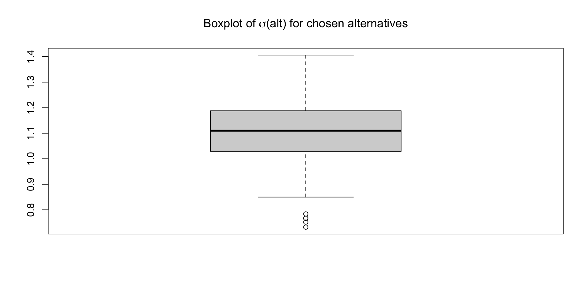

Conjoint Analysis: A Case Study on Wine Consumers’ Preferences in Trentino
Camilla Bonomo, Virginia Di Mauro, Sara Lammouchi, Luisa Porzio, Anthony Tricarico
Table of Contents
- Introduction
- Methodology
- Results
- Interpretation of Results
- Managerial implications and Conclusions
Introduction
Why is Conjoint Analysis Beneficial
One of the main struggles in business analysis and market research is understanding the real preferences of the consumers. Using simple opinion surveys might not be sufficient to understand what consumers prefers.
Choice based conjoint analysis is a more advanced methodological procedure used in market research that allows to get explicitly which combinations of product’s attributes and levels are preferred by the consumers.
Indeed, conjoint analysis can be defined as “any decompositional method that estimates the structure of a consumer’s preferences in terms of the levels of attributes of the alternatives” (Rao, 2014).
The case study selected
This project is focused on investigating consumers’ preferences in the wine sector, focusing specifically on wines from canteens in the region of Trentino. We decided to conduct our analysis on this type of product as it is something that can have many attributes, each with many levels, so it was an interesting object of study for a choice based conjoint analysis.
Methodology
The analysis starts off with the simulation of a choice-based conjoint survey on wines preferences, from which the data were generated.
- Each respondent repeatedly faced sets of four alternatives and was asked to select the one wine they would prefer to purchase.
- Respondents/Choices: 350 respondents completing 6,300 choice situations. In total we have 25,200 observations where each row corresponds to a specific alternative within a specific question for a specific respondent.
Attributes and levels selected
- Price per bottle: Cheap (3-15€), Popular (15-20€), Premium (20-50€), Luxury (50-100€)
- Brands: Cavit, Mezzacorona, La-Vis, Cantina Toblino
- Type of wine: red wine, white wine, sparkling wine, rose wine.
- Alcohol Percentage: 5.5%, 7%, 12%, 18%
- Wine aging time: 1 year, 2 years, 3 years, 4 years, 5 years, > 5 years
- Sweetness: dry, semi-dry, semi-sweet, sweet
- Quality label: No designation, IGT, DOC, DOCG
Checks performed and Modelling
To assess potential survey fatigue or possible respondents distractions, we examined for each respondent the standard deviation of the chosen alternative position (alt) across questions.
Respondents with low variability are those choosing mostly the answer in the same position for each different question.
Only a small portion (4 participants resulted having low variability, so they were not dropped from the study
Random Utility Model
Respondents choose from alternatives differing only by product attributes Predictors vary across alternatives, not individuals → appropriate model is Conditional Logit (MNL)
Why MNL as the baseline?
Captures average (homogeneous) preferences Provides clear, interpretable utility comparisons across attribute levels Serves as benchmark for richer models
Price represented in two ways:
Categorical (Cheap–Luxury)
Flexible and non-linear
Better empirical fit
Continuous (Price_eur)
Midpoint of each price tier: Cheap €9, Popular €17.5, Premium €35, Luxury €75
Used to compute WTP Less flexible but interpretable marginal effect
Model comparison Likelihood ratio tests → categorical price model preferred
Continuous model retained only for WTP computation
Why extend MNL?
MNL assumes homogeneous tastes Does not capture respondent-level variation
Mixed MNL (MMNL) Allows random coefficients across respondents
Estimated:
Uncorrelated random coefficients
Fully correlated random coefficients
Reduced model with only significant correlations
Fit improves substantially → strong evidence of preference heterogeneity
Individual part-worth extracted for descriptive insight (no demographics → heterogeneity cannot be explained)
Results

Data Modeling
Baseline model assuming homogeneous preferences
| term | statistic | Coefficient Estimate |
|---|---|---|
| PriceLuxury | estimate | -1.077 (0.051)*** |
| PricePopular | estimate | -0.333 (0.047)*** |
| PricePremium | estimate | -0.685 (0.048)*** |
| BrandsLa-Vis | estimate | -0.282 (0.049)*** |
| BrandsMezzacorona | estimate | 0.736 (0.047)*** |
| BrandsToblino | estimate | -0.918 (0.054)*** |
| Typerose | estimate | 0.770 (0.045)*** |
| Typesparkling | estimate | -1.350 (0.055)*** |
| Typewhite | estimate | -0.938 (0.051)*** |
| Alcohol12 Perc | estimate | 0.545 (0.048)*** |
| Alcohol18 Perc | estimate | 0.515 (0.048)*** |
| Alcohol7 Perc | estimate | -1.057 (0.056)*** |
| Age2 years | estimate | 0.301 (0.064)*** |
| Age3 years | estimate | 0.676 (0.063)*** |
| Age4 years | estimate | 1.149 (0.062)*** |
| Age5 years | estimate | 0.704 (0.063)*** |
| Age5+ years | estimate | 0.439 (0.063)*** |
| Sweetnesssemi-dry | estimate | -0.664 (0.049)*** |
| Sweetnesssemi-sweet | estimate | 0.087 (0.047)+ |
| Sweetnesssweet | estimate | -0.907 (0.051)*** |
| labelDOC | estimate | 0.565 (0.051)*** |
| labelDOCG | estimate | 0.676 (0.050)*** |
| labelIGT | estimate | 0.225 (0.051)*** |
Accounts for substantial unobserved taste heterogeneity across individuals
| term | statistic | Coefficient Estimate |
|---|---|---|
| PriceLuxury | estimate | -1.258 (0.060)*** |
| PricePopular | estimate | -0.374 (0.054)*** |
| PricePremium | estimate | -0.817 (0.056)*** |
| BrandsLa-Vis | estimate | -0.345 (0.057)*** |
| BrandsMezzacorona | estimate | 0.889 (0.055)*** |
| BrandsToblino | estimate | -1.034 (0.061)*** |
| Typerose | estimate | 0.914 (0.053)*** |
| Typesparkling | estimate | -1.545 (0.064)*** |
| Typewhite | estimate | -1.102 (0.059)*** |
| Alcohol12 Perc | estimate | 0.611 (0.054)*** |
| Alcohol18 Perc | estimate | 0.606 (0.056)*** |
| Alcohol7 Perc | estimate | -1.297 (0.068)*** |
| Age2 years | estimate | 0.346 (0.075)*** |
| Age3 years | estimate | 0.777 (0.073)*** |
| Age4 years | estimate | 1.333 (0.074)*** |
| Age5 years | estimate | 0.831 (0.074)*** |
| Age5+ years | estimate | 0.500 (0.073)*** |
| Sweetnesssemi-dry | estimate | -0.745 (0.057)*** |
| Sweetnesssemi-sweet | estimate | 0.115 (0.053)* |
| Sweetnesssweet | estimate | -1.043 (0.059)*** |
| labelDOC | estimate | 0.608 (0.058)*** |
| labelDOCG | estimate | 0.751 (0.059)*** |
| labelIGT | estimate | 0.262 (0.058)*** |
| sd.PriceLuxury | estimate | 0.516 (0.075)*** |
| sd.PricePopular | estimate | 0.425 (0.067)*** |
| sd.PricePremium | estimate | -0.419 (0.076)*** |
| sd.BrandsLa-Vis | estimate | 0.394 (0.072)*** |
| sd.BrandsMezzacorona | estimate | 0.344 (0.074)*** |
| sd.BrandsToblino | estimate | 0.035 (0.091) |
| sd.Typerose | estimate | 0.496 (0.069)*** |
| sd.Typesparkling | estimate | 0.245 (0.084)** |
| sd.Typewhite | estimate | -0.127 (0.081) |
| sd.Alcohol12 Perc | estimate | -0.142 (0.071)* |
| sd.Alcohol18 Perc | estimate | 0.156 (0.076)* |
| sd.Alcohol7 Perc | estimate | 0.641 (0.086)*** |
| sd.Age2 years | estimate | 0.380 (0.098)*** |
| sd.Age3 years | estimate | -0.449 (0.081)*** |
| sd.Age4 years | estimate | -0.027 (0.086) |
| sd.Age5 years | estimate | 0.414 (0.086)*** |
| sd.Age5+ years | estimate | 0.411 (0.091)*** |
| sd.Sweetnesssemi-dry | estimate | 0.608 (0.072)*** |
| sd.Sweetnesssemi-sweet | estimate | 0.460 (0.067)*** |
| sd.Sweetnesssweet | estimate | 0.543 (0.071)*** |
| sd.labelDOC | estimate | 0.577 (0.065)*** |
| sd.labelDOCG | estimate | 0.444 (0.070)*** |
| sd.labelIGT | estimate | 0.403 (0.076)*** |
Interpretation of results
Managerial Implications (1)
1.Optimal Product Profile: which combination of attributes maximizes choice.
Our models identify a clear high-potential wine configuration:
Strong brand (Mezzacorona)
Rosé type
12–18% alcohol content
~4 years of ageing
Dry or semi-sweet taste
DOC/DOCG certification
Profiles that combine these attributes consistently reach the highest utilities and predicted preference shares.
Prioritize these attributes in product development, as they strongly drive consumer choice
2.Pricing Strategy: pricing guided by willingness to pay
Positive WTP for brand, ageing, type, and certification. Consumers are willing to pay more for wines with these features.
Negative WTP for weak branding, sweet taste, low ageing, and no designation. These wines must be priced more competitively.
Use WTP values to set price tiers that reflect actual consumer preferences
Managerial Implications (2)
3.Communication Strategy: communicating value Brand and DOC/DOCG certification have some of the strongest positive effects in the MNL results.
Sensitivity analysis shows that changes in brand have a strong impact on predicted choice
Implications:
Make brand identity and certification highly visible on the bottle.
Use storytelling about origin, ageing, and quality standards to reinforce credibility.
Highlight rosé and dry/semi-sweet styles
Focus communication on the signals that consumers value most.
4.Segmentation: consumers do not value attributes equally
Mixed logit results show systematic preference differences across individuals:
Some are more price-sensitive Others focus on brand & label
Others care more about style (sweetness, alcohol, etc.)
A single product is unlikely to appeal equally to all segments.
Implications:
Consider differentiated product lines (value vs premium).
Tailor marketing messages to different preference profiles.
Recognizing preference differences helps design better products and more effective marketing.